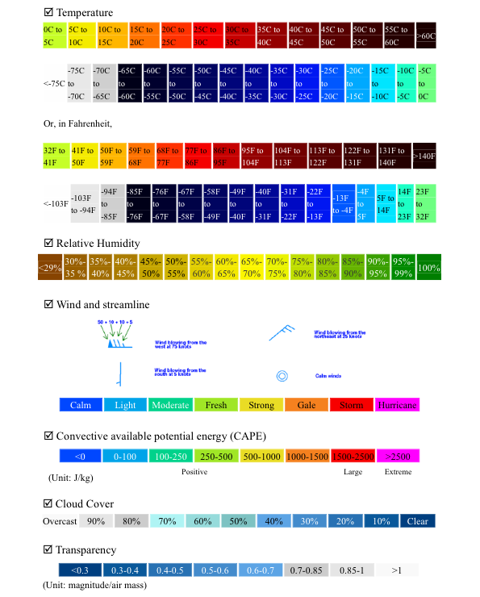

Fenêtre Prévisions Météorologiques
Les prévisions météorologiques jusqu’à 96 heures dans le futur vous aideront à trouver le meilleur lieu d’observation pour l’éclipse de lune une fois sur zone. Un accès à Internet sera nécessaire. Pour cela vous devez ouvrir la fenêtre Prévisions Météorologiques depuis Lunar Eclipse Maestro.
Des prévisions météo locales à 3 jours sont aussi disponibles depuis n’importe quel lieu.
Les cartes météorologiques de 7Timer sont utilisées pour fournir les prévisions régionales jusqu’à 4 jours dans le futur. Le jeux complet de cartes est quant à lui disponible ici. Les fonctionnalités intégrées à Lunar Eclipse Maestro sont un sous-ensemble de celles fournies par 7Timer, mais ce sont celles qui ont le plus d’intérêt pour les chasseurs d’éclipses. La légende des cartes est disponible plus bas.
Les données et graphes de 7Timer sont générés à partir du modèle Global Forecast System (GFS) du National Centers for Environmental Prediction (NCEP). Une description du modèle GFS vous permet d’en savoir plus et les modifications du modèle GFS vous permettent de savoir à quoi il faut s’attendre. Ceux qui souhaitent connaître les bases des prévisions météorologiques disponibles dans Lunar Eclipse Maestro doivent lire cette documentation.
Note: les données numériques GFS sont générées toutes les 6 heures par le NCEP et l’instant de référence du modèle GFS correspondant est indiqué par la première ligne du menu déroulant Date en bas à droite de la fenêtre Prévisions Météorologiques. Les cartes météorologiques sont ensuite générées par Ye Quanzhi de 7Timer toutes les 6 heures, mais il faut plusieures heures pour les calculer. Le jeux complet de cartes est généralement disponible 4 à 8 heures après l’instant de référence du modèle GFS. Lunar Eclipse Maestro affiche les données les plus récentes et l’instant de référence du modèle GFS est soit identique, ou alors décalé au jour précédent en UTC, par rapport à celui de la première ligne du menu déroulant Date. Vous devez toujours vérifier le titre de la carte affichée afin d’être certain que la date et l’heure correspondent à la demande. Vérifiez aussi que vous connaissez votre fuseau horaire car les heures sont données en UTC.
|
